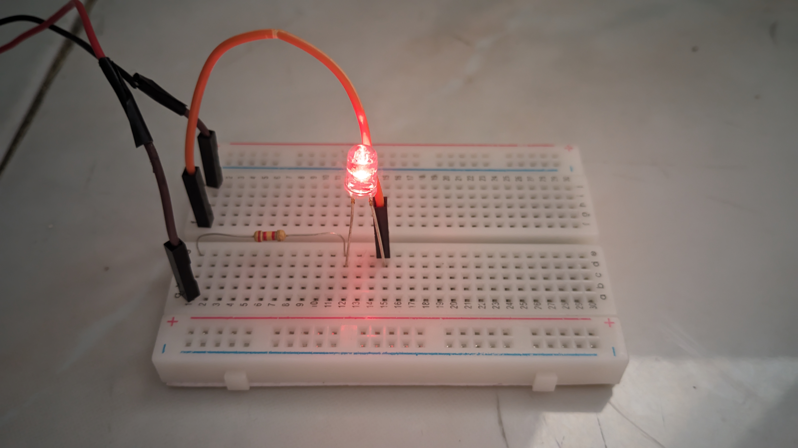
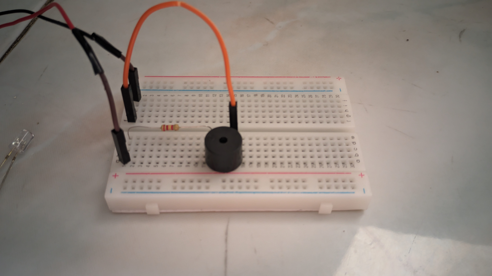
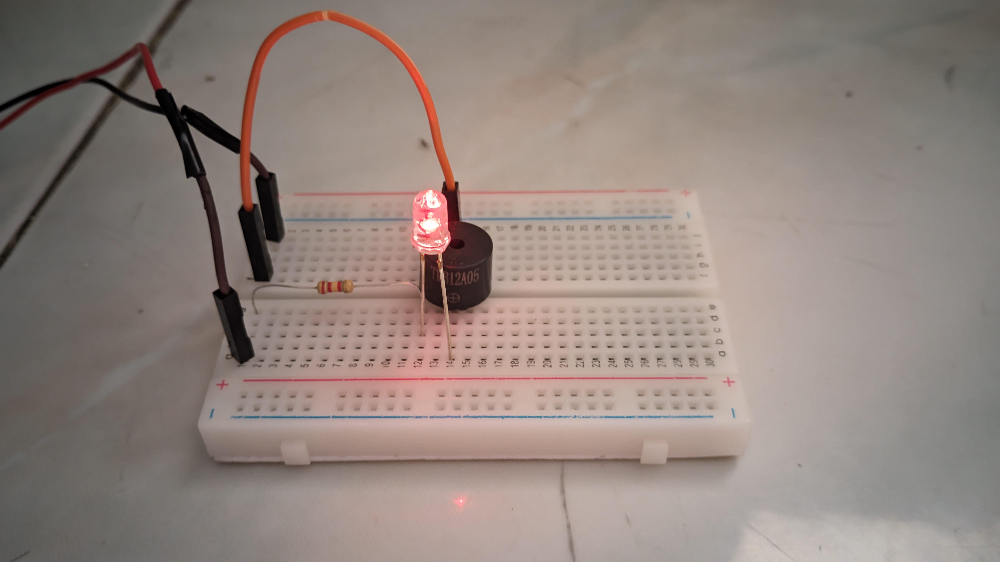

Project 01 — Seri Rangkaian Breadboard
Selesai
- Deskripsi
- Tiga rangkaian bertahap: LED + resistor, buzzer + resistor, dan gabungan keduanya.
- Peran
- Perakit rangkaian.
- Proses
- Mempelajari fungsi tiap komponen, merakit dari rangkaian paling sederhana, lalu menggabungkan dua rangkaian menjadi satu.
- Hasil
- Ketiga rangkaian berfungsi.

Foto menyusul

Foto menyusul

Foto menyusul